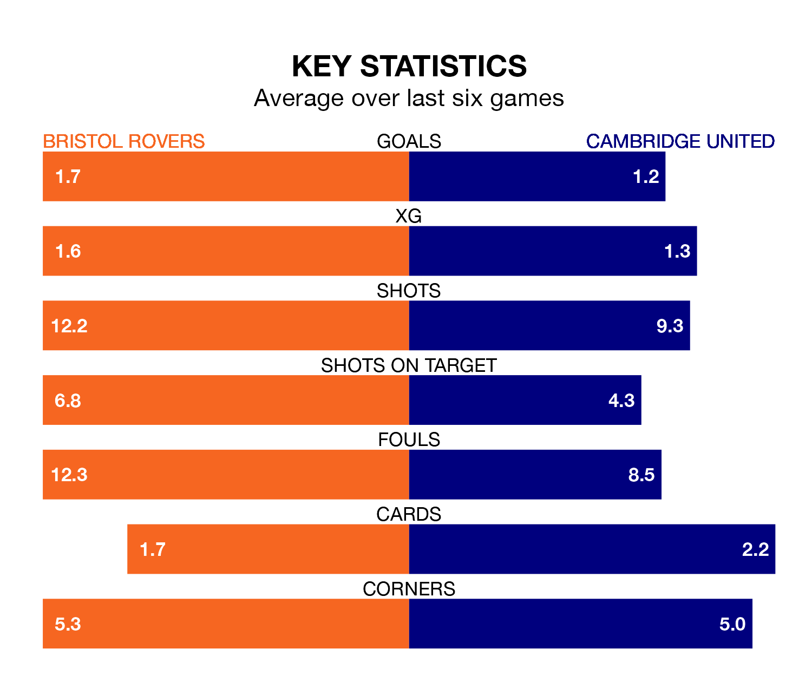

Cambridge United travel to Bristol Rovers on Saturday in EFL League One.
The visitors come into the game on the back of a defeat in their last match, having lost to Leyton Orient 2-0 at home.
The Gas also lost their last match, 3-2 against Wycombe Wanderers, with their goals scored by Chris Martin.
Rovers' Aaron Collins is the league's most creative player, racking up eight assists in 24 appearances so far this season.
For Cambridge, George Thomas, James Brophy and Fejiri Okenabirhie have set up the most goals, having laid on two assists apiece to date.
With 21 goals in 24 games so far this season, United are scoring at below the league average rate with 0.9 goals per game. And they are conceding at an average rate, letting in 32 goals at a rate of 1.3 per game.
The Gas, meanwhile, are above average scorers, with 1.4 goals per game, compared to a league average of 1.3. They have also conceded 1.4 goals per game.
The away side are 19th in the table after 24 games, of which they have won seven and drawn six, earning 27 points.
The hosts are eight places ahead of Cambridge in 11th, with nine wins and seven draws putting them on 34 points.
Rovers are in mixed form in EFL League One, with three wins and a draw from their last six games.
With two wins and a draw over that period, Cambridge's form is worse – they have taken seven points from 18, compared to Rovers' 10.
In the last three years, Rovers and Cambridge have played each other on three occasions. Rovers won two of them and Cambridge one.
Their last meeting was on August 19, when Cambridge won 2-0 at home.
Updated: 12:57, 02/01/24